Creative portfolio Nienke Wessel
This page showcases some creative designs I have made in the past.
Logos
Thalia logos
My study association has logos for different committees and societies. I made logos for several of them, which are shown here. The idea behind these logos is that each of them fits with the association style sheet, while still having a unique touch that expresses the group's identity.
 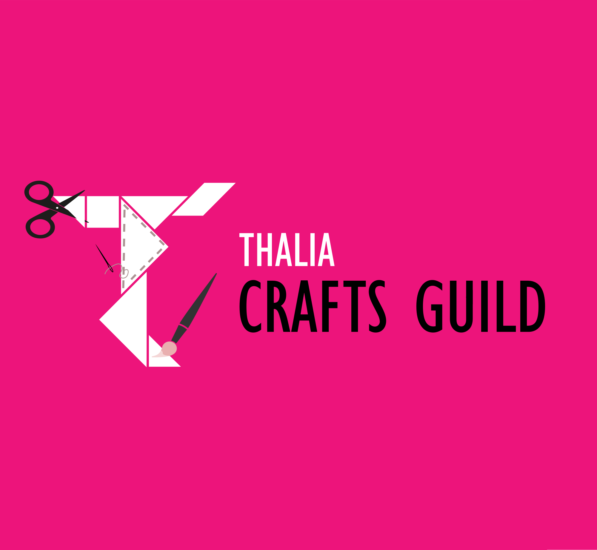
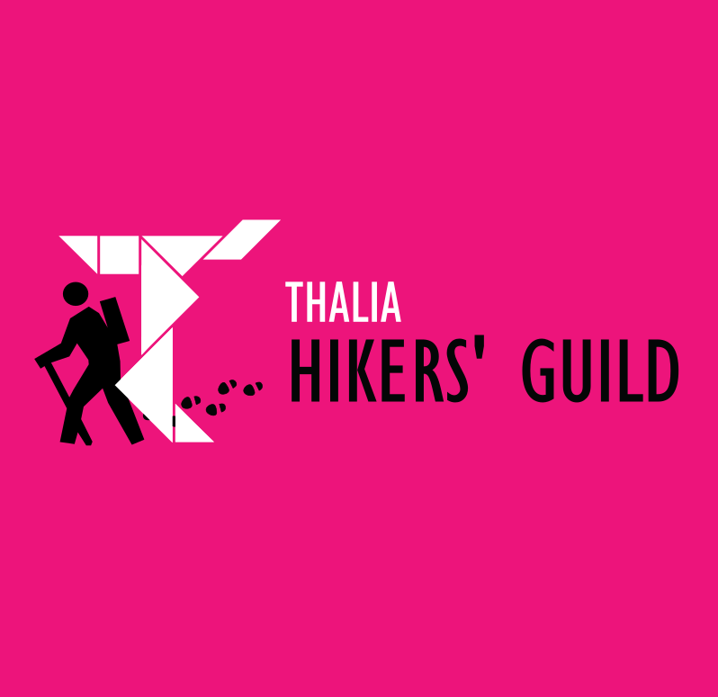
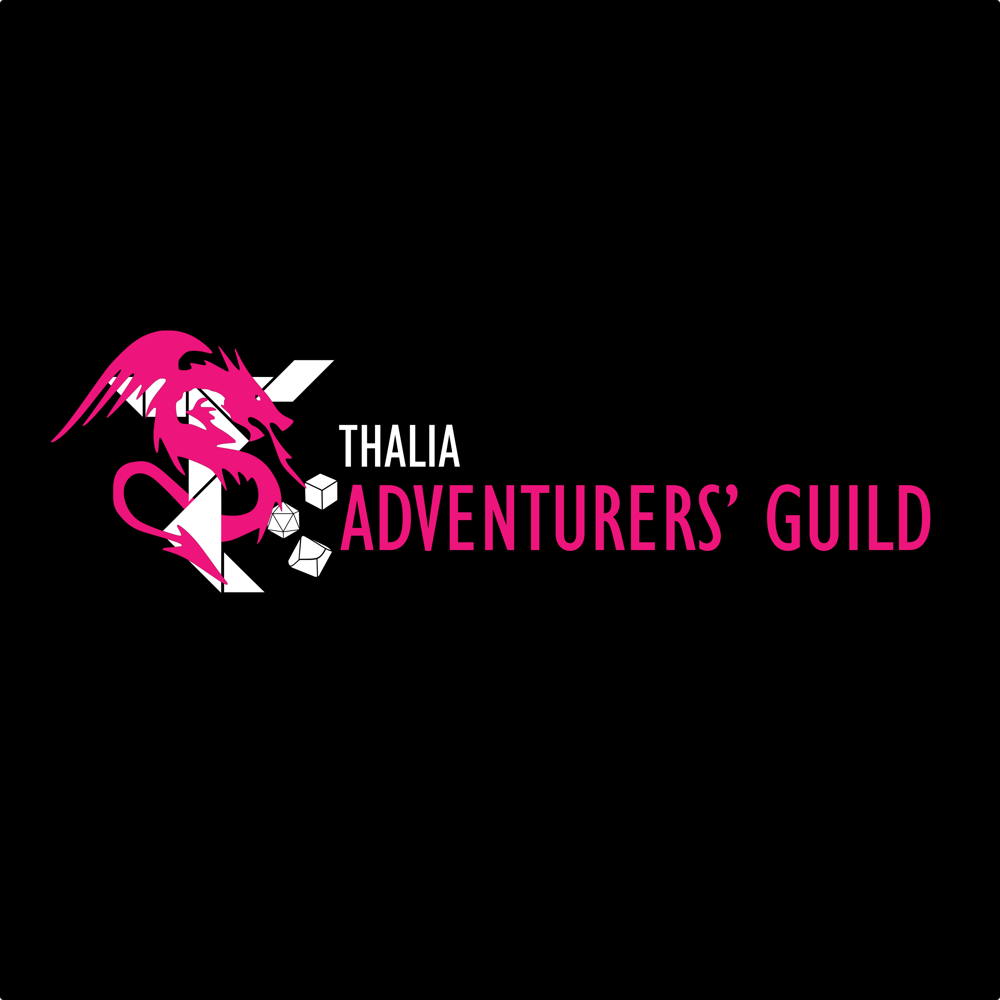
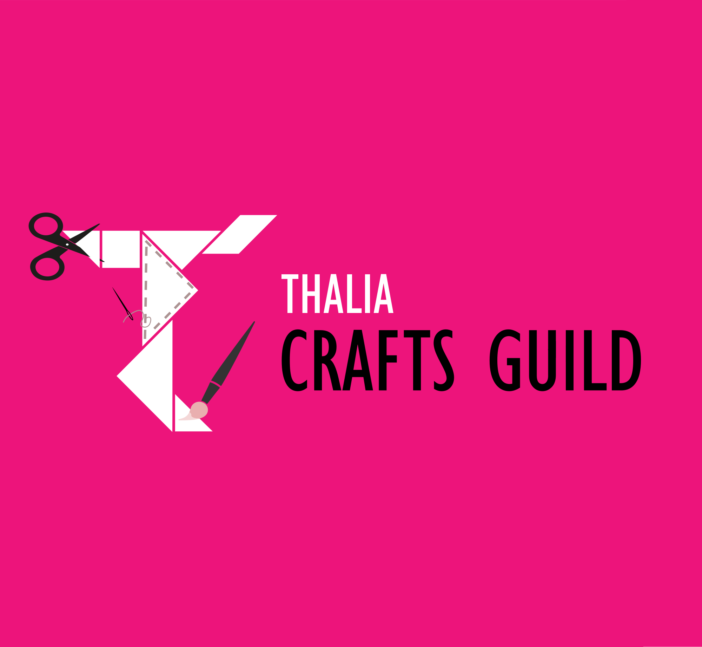
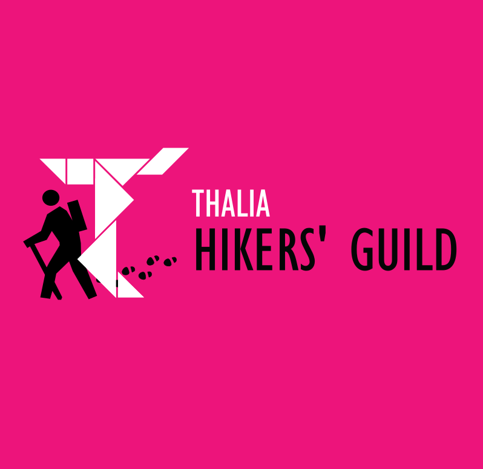
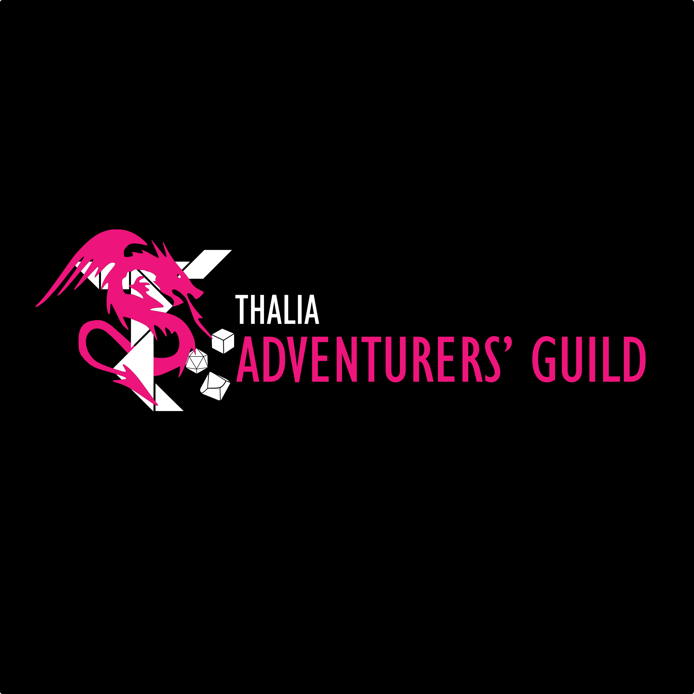
Other logos
The following logo was created to be printed on a t-shirt as a keepsake for those who studied in Egypt in the same semester as I did. Most parts were drawn digitally by me, such as the building on the front which represents the institute we studied at. Some elements such as the palm trees and cats are premade vector images.
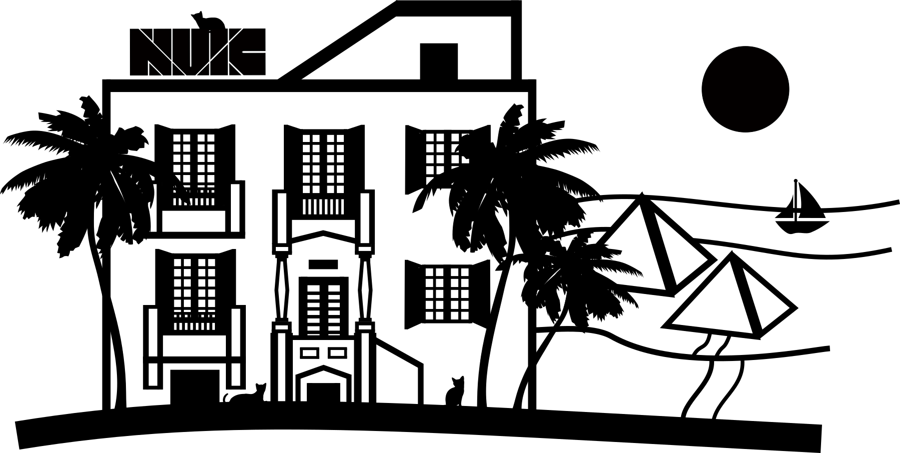Posters
I have made the following poster for a course in InDesign. It contains quite some text (more than I would normally include), but this was part of the course requirement.
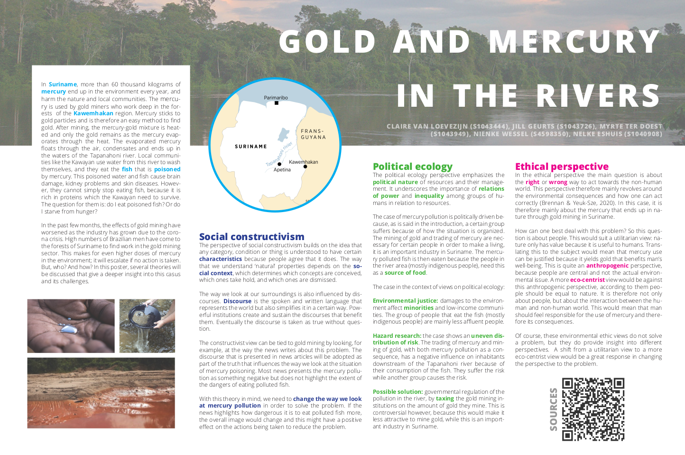
Webpages
I am proficient in CSS, HTML, and JavaScript as front-end languages. I also have experience with WordPress. Some examples:
- The current page and accompanying resume page have been made from scratch.
- For an Honours project, I built a page to investigate language differences in prepositions through a graph.
- I have also adjusted existing templates. See for example this Honours project
Book/magazine pages
I have been designing for 5+ years for the association magazine and almanac. For the association magazine, we at some point did an overhaul of the template to include more different styles and to ensure that everyone works with the same settings. The following examples come from page templates I designed as basis for the new style.
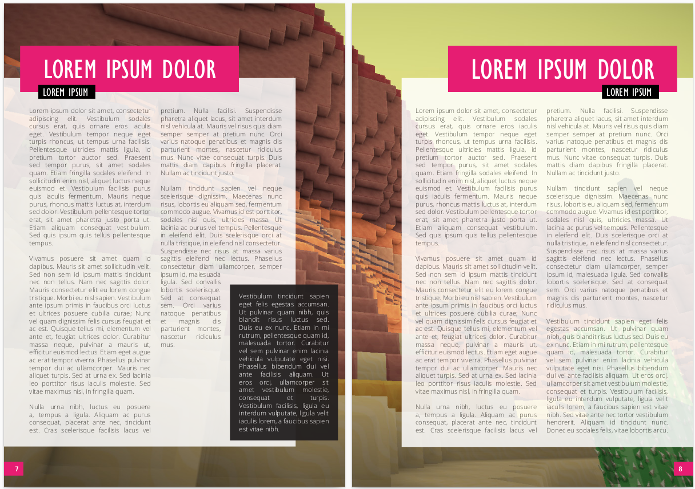 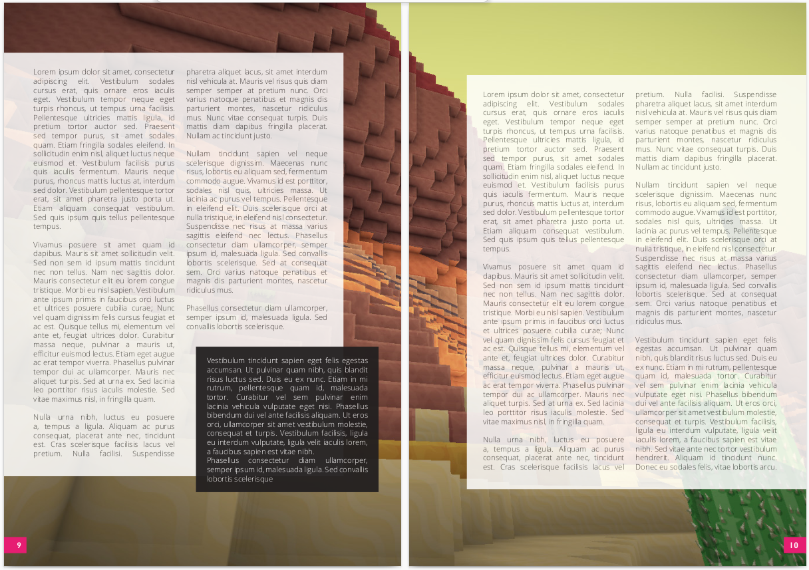 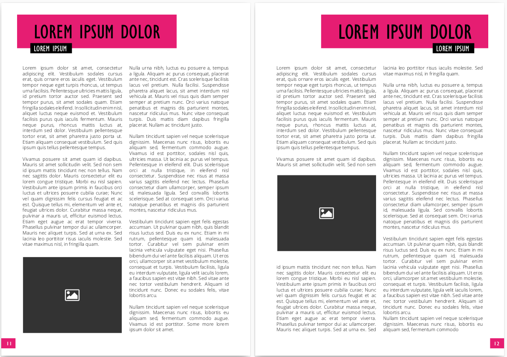 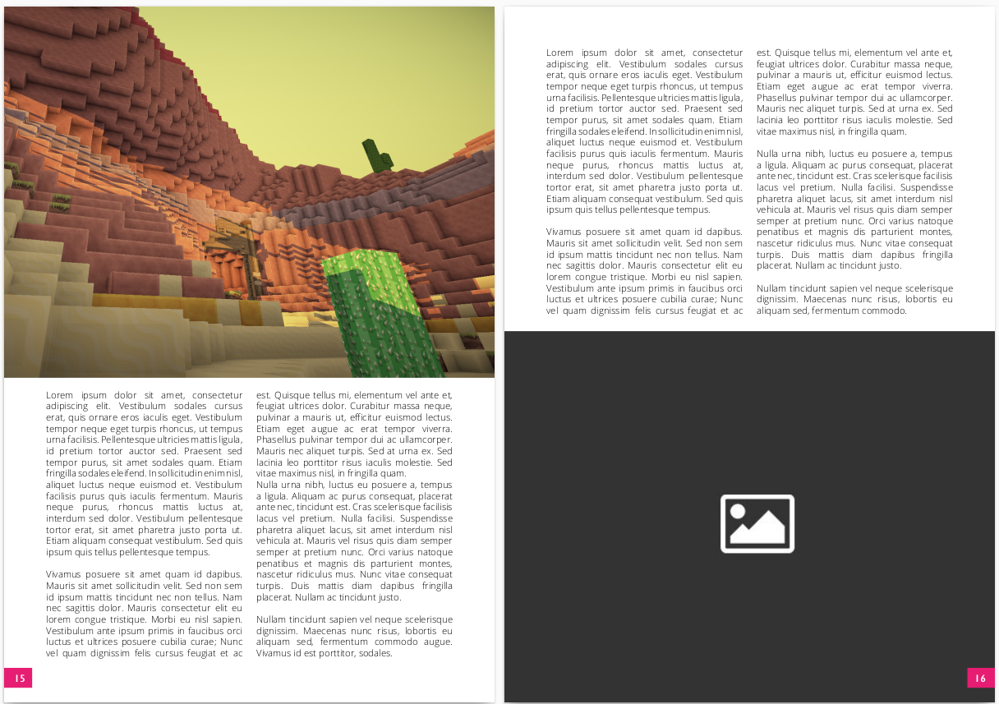I also helped design the association almanac in 2020, where I specifically designed cohort pages. The pages are made in such a way that they combine the theme (which was 'gold'), as well as colors from that specific cohort.
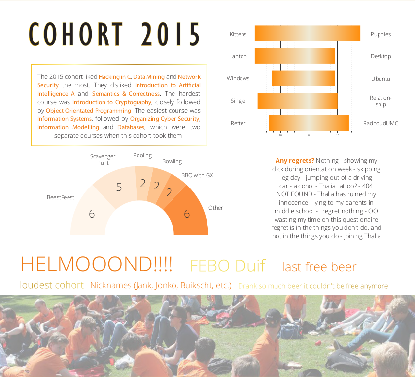 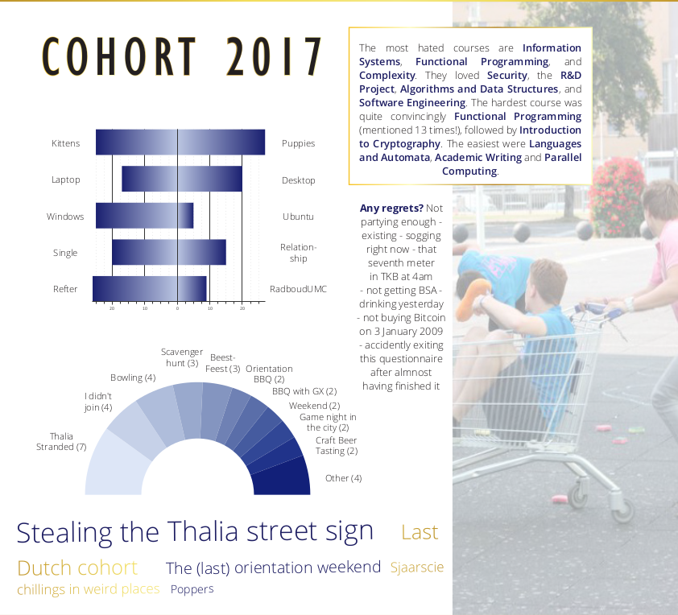